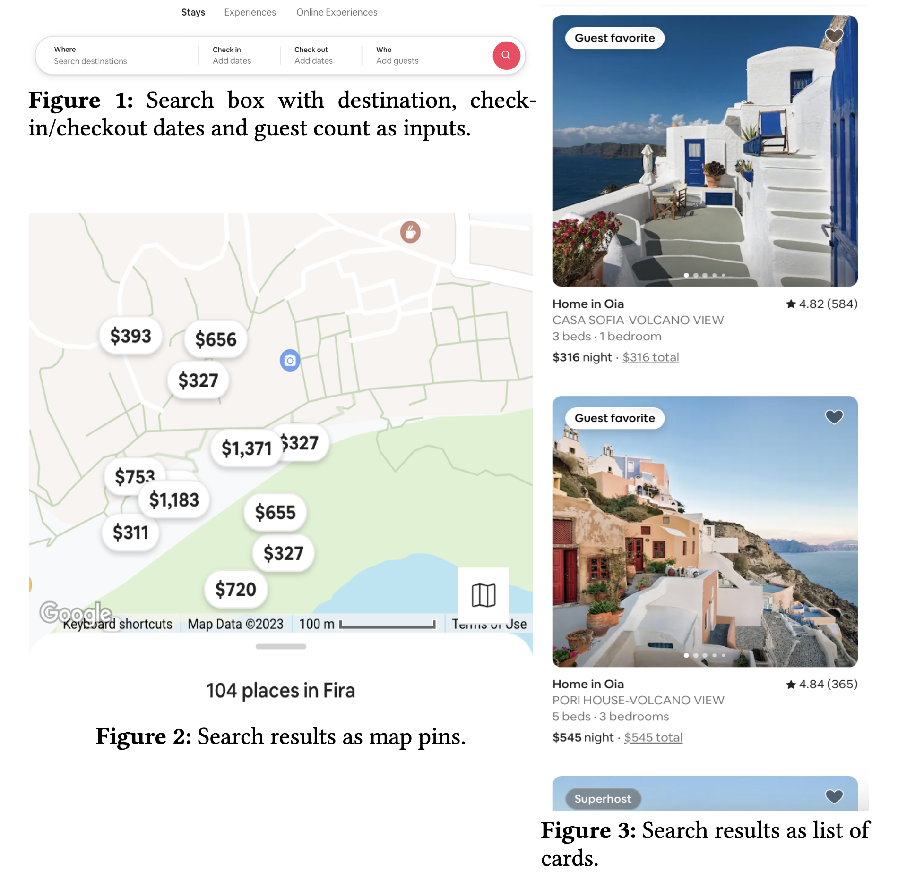
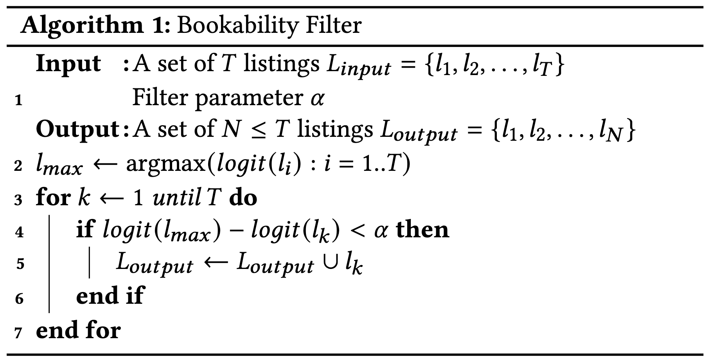
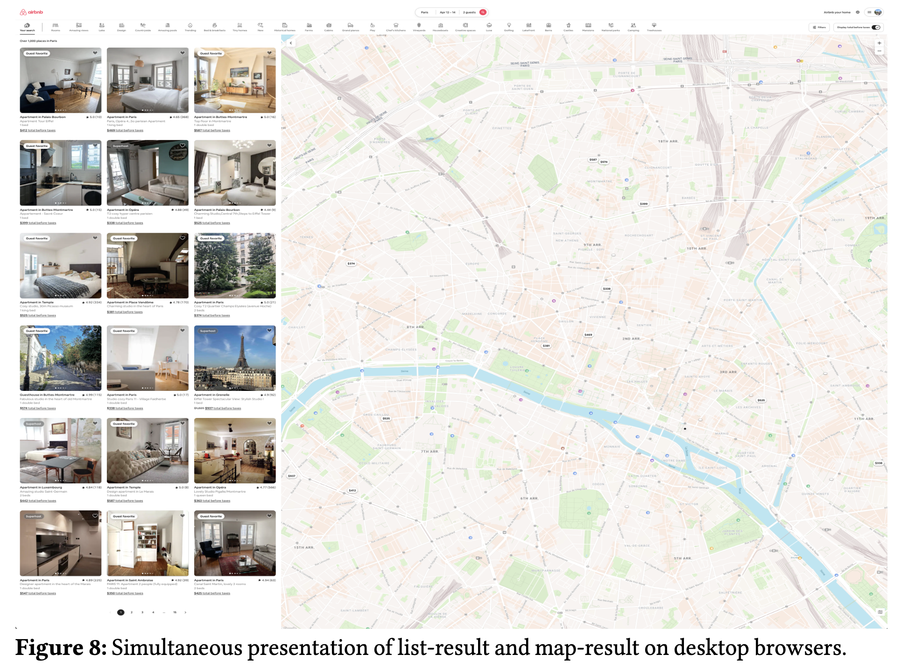
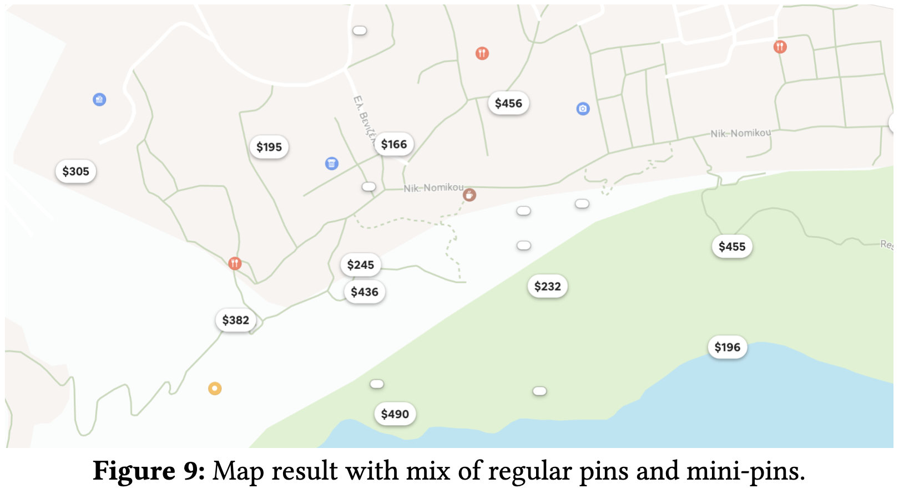
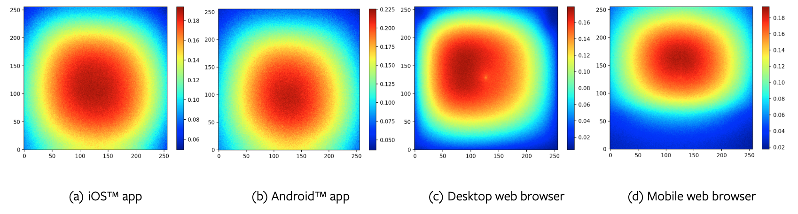

- タイトル: Learning to Rank for Maps at Airbnb
- URL: https://arxiv.org/abs/2407.00091
- KDD 2024, Applied Data Science Track
概要
- Airbnb には検索結果の表示方法が以下の図のように 2 つのある: (1) リスト表示，(2) 地図表示

Airbnb における検索ボックス，リスト表示，地図表示(図は論文より引用)
- (クエリ Q による検索で予約が発生する確率) = Σ_i (順位 i の宿が見られる確率) * (順位 i の宿の予約確率) という式から出発し，(順位 i の宿が見られる確率) に関する仮定がリスト表示と地図表示では異なる点に着目して様々な改善を実施したよ，というテックブログ的論文
背景: Map ≠ List
- 検索結果の評価においては，リスト表示を前提とした nDCG が一般的に使われる
- nDCG ではユーザが 1 位から順にアイテムを見ていくため，(順位 i の宿が見られる確率) は i が小さいほど高いという仮定があるが，この仮定は地図表示では成立しない
- (順位 i の宿が見られる確率) のことを，これ以降では (順位 i の宿の注意) と呼ぶ
- リスト表示と地図表示が全然異なるという例
- 予測確率上位 N 個の宿をランダムな順序にする A/B テストは，リスト表示では予約数 8% 減，nDCG 5% 減と大きな悪化
- 地図表示で同様の実験をすると，（当たり前だが）指標に変化はなかった
施策 1: 表示数の調整（Section 3, 4, 5）
- 前提: (クエリ Q による検索で予約が発生する確率) = Σ_i (順位 i の注意) * (順位 i の宿の予約確率)
- リスト表示においては，i < j のとき，(順位 i の注意) > (順位 j の注意) が成立
- 仮説: 地図表示においては，(順位 i の注意) = (順位 j の注意) = 1/N となるのでは？（N は表示する宿の数）
- このとき，(クエリ Q による検索で予約が発生する確率) = 1/N Σ_i (順位 i の宿の予約確率) = (表示する宿の平均予約確率)
- 地図で表示するアイテムを予約確率が高いものに絞ることで，予約数向上が見込める！
- 提案手法（Bookability Filter）: N 個の候補のうち，logit(宿の予約確率の最大値) - logit(宿 i の予約確率) > α の宿のみ選択し，地図に表示（Algo.1．α はハイパーパラメータ，実験で 1.0 に設定）

Bookability Filter
- 実験: 地図を単体で表示するモバイルのみに絞って A/B テストを実施
- control が 18 個固定，treatment が提案手法
- 結果: 提案手法が p 値 0.00001 未満，予約数 1.9% 増で過去数年で最大の勝ち案件の 1 つに
- さらなる改善: 宿の予約確率の最大値だと外れ値の影響を受けるので，top-n（n はヒット件数に依存する定数）の中央値を採用 → 各種指標を悪化させずに表示件数を増やすことに成功
- これは本当にユーザの検索体験を向上させたのか？
- 疑問: 表示される宿の数が減ったことで，ユーザは予約可能な残りの宿が少ないと考えて急ぎで予約し，その結果，予約数が増えたのでは？（緊急性仮説）
- 18 個固定 vs 14 個固定で A/B テストを実施した結果，緊急性の仮説は否定された
施策 2: 異なる注意と 2 種類のピン（Section 6）
- 前提: モバイルとは違って，Web はリストと地図が同時に表示される（Fig.8）

- 加えて，地図においては値段が表示される通常のピンと，値段が表示されない小さいピン（ミニピン）が存在（Fig.9）

- 仮説: 通常ピンとミニピンでは CTR に 8 倍の差があるので，注意にも差があるはず
- なので，どの宿を通常ピン or ミニピンで表示するかで，検索から予約が発生する確率も変わるのでは？
- 提案手法: さきほどの Bookability Filter で選ばれた宿を通常ピン，残りをミニピンで表示
- A/B テスト結果: 予約数 0.7% 増で勝ち案件
施策 3: 地図上の注意と表示の最適化（Section 7）
- 前提: 地図表示においては，表示の中心の宿ほど CTR が高い（Fig.10）

- 仮説: 表示の中心を元にした注意を考慮し，中心の位置を変えれば，検索から予約が発生する確率も変わるのでは？
- 提案手法: 中心からの相対位置を考慮した注意（式 6）を元に，中心を位置を最適化する手法を提案
- 手法: 地図をセルに等分割し，各セルを中心にしたときの (あるクエリ Q が予約される確率) が最大になる位置を中心とする（Algo.2）
- A/B テスト結果: 検索からの地図表示において，提案手法 (control) が p値 0.006 で予約数 0.39% 増加の勝ち案件に
- ユーザが能動的に地図を移動させる割合も 1.5% 減っており，いい感じの中心が設定できている
まとめ
- これまでは，地図は特別扱いされることなく，あまり研究されてこなかった
- 本研究では，通常の研究が注力する宿の予約確率の予測ではなく，宿の注意に着目しモデル化することで，予約数などの各種指標を向上することができた．
- 今後の課題: さらなる注意のモデル化，バイアスの問題，ピンの種類，表示の最適化，public dataset の作成
所感
- 論文というよりテックブログ的な印象だが，内容は面白いし，地図表示には研究の余地があるよねという点を示したのはコミュニティ的には大事という話と理解した
- Point-of-interest の推薦とかと関連ありそうだけど，関連研究として提示されてなさそうだった．なんでだろか．
- Airbnb 検索は KDD18, 19, 20, 23, 24 とずっと KDD で発表しつづけていてすごい